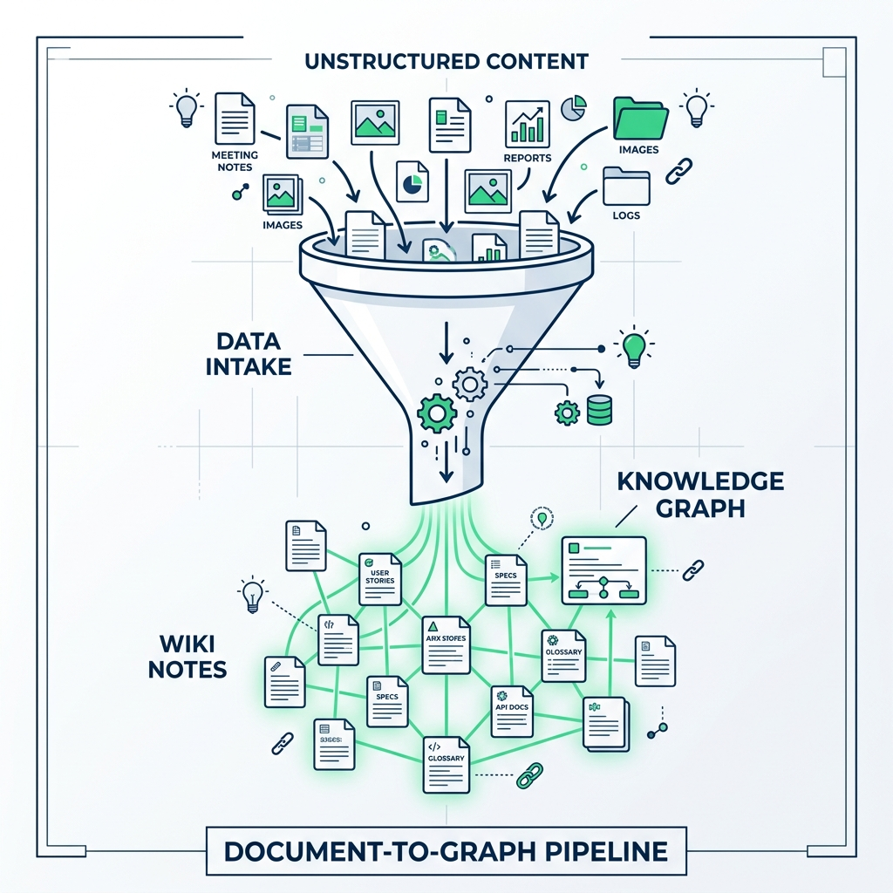
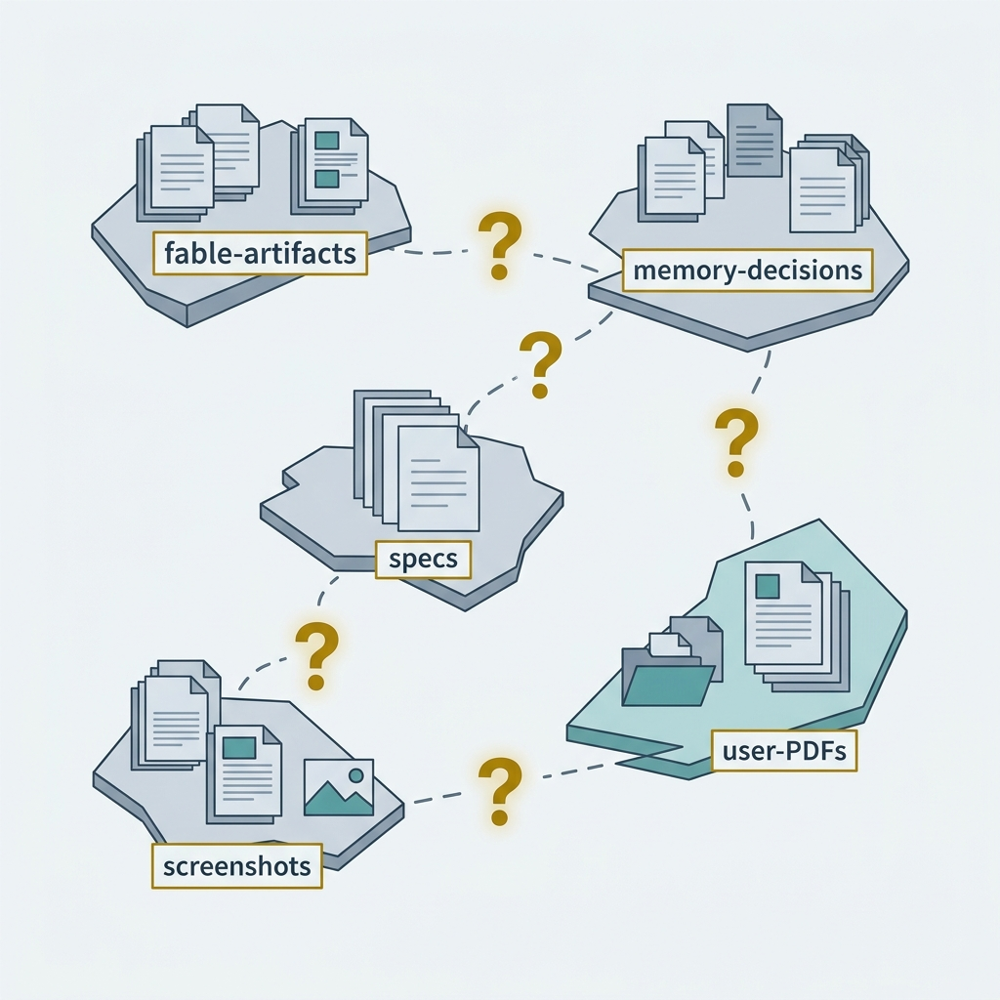
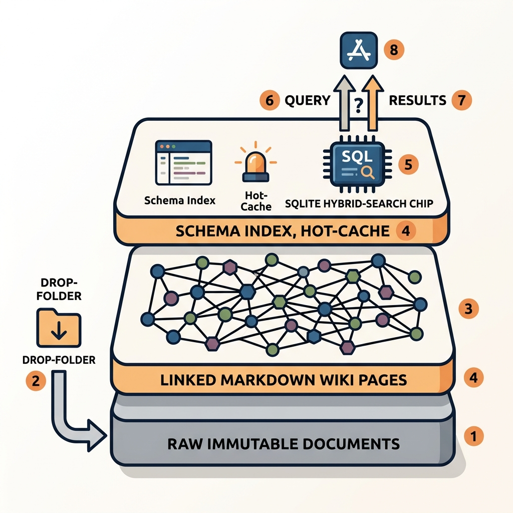
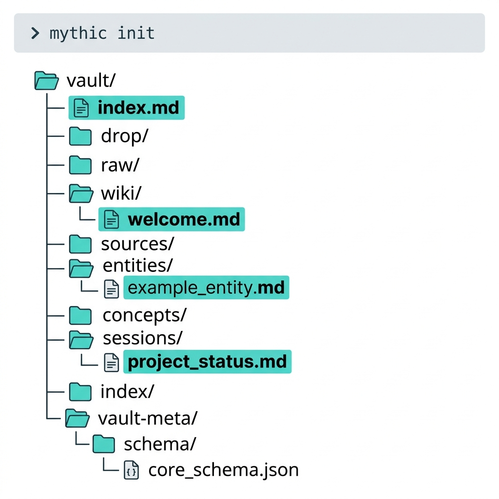
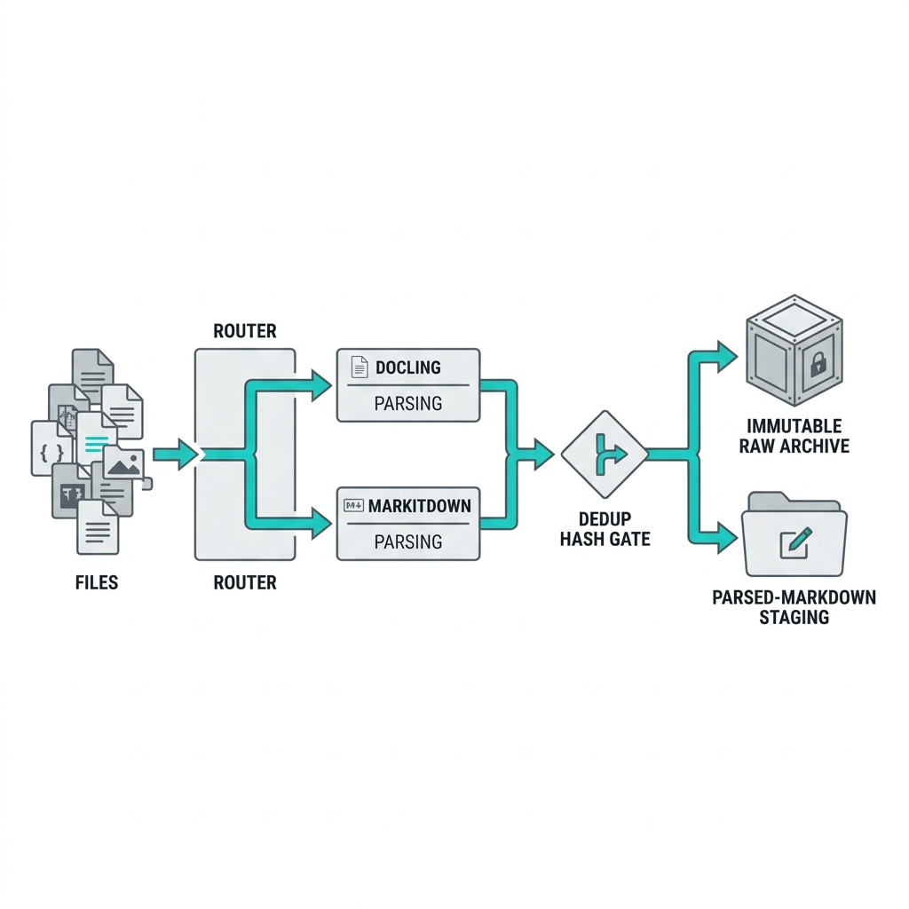
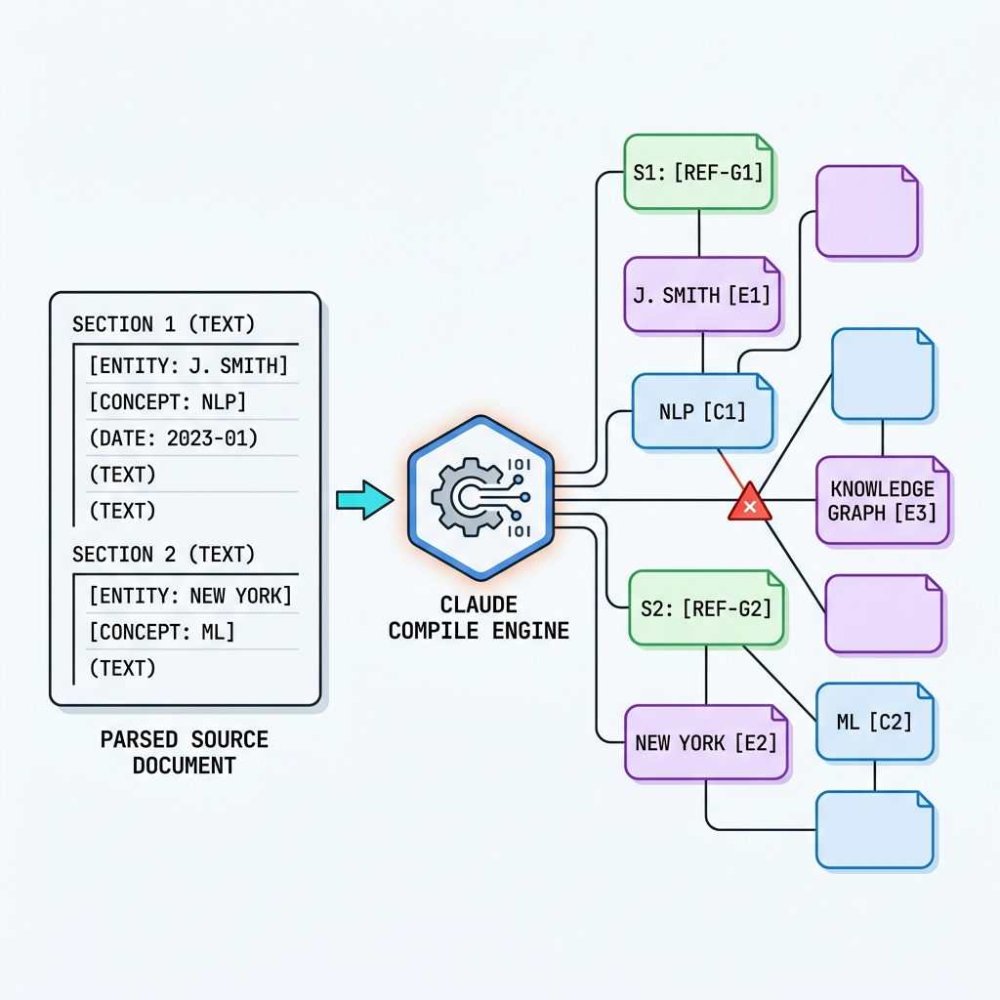
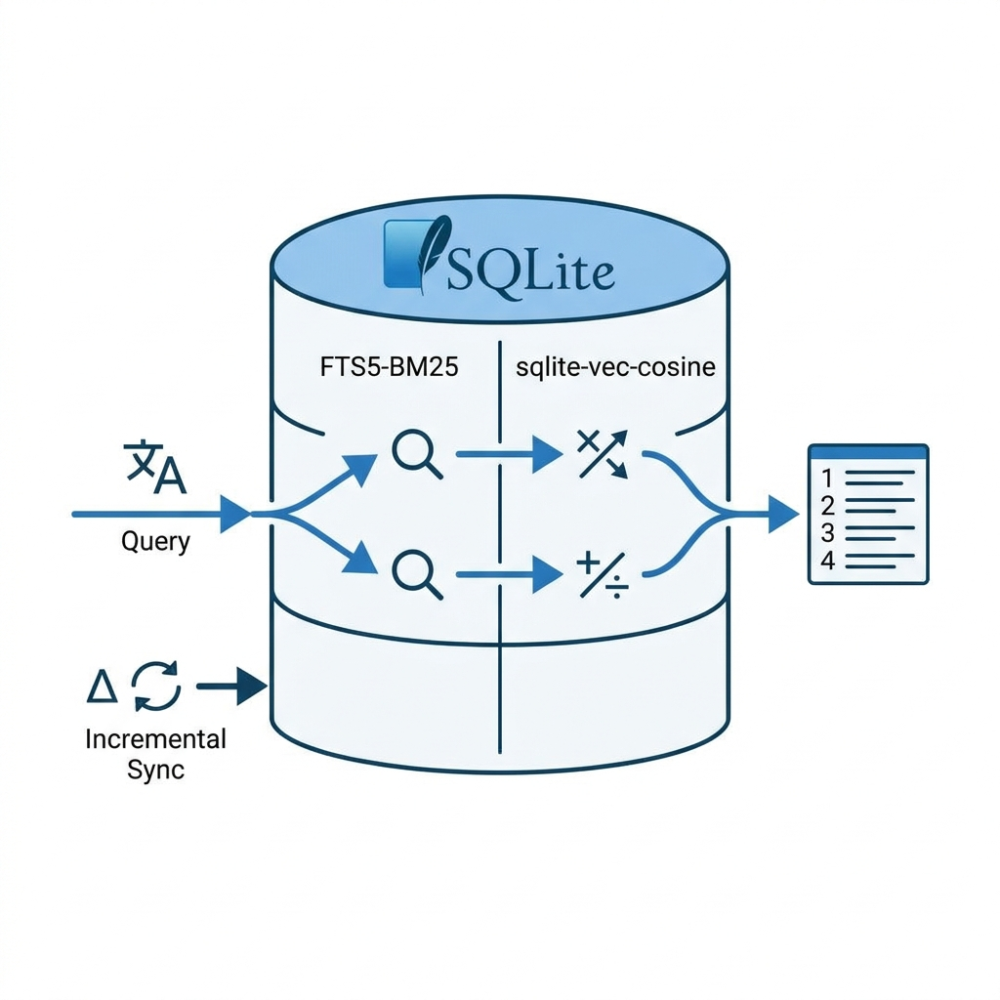
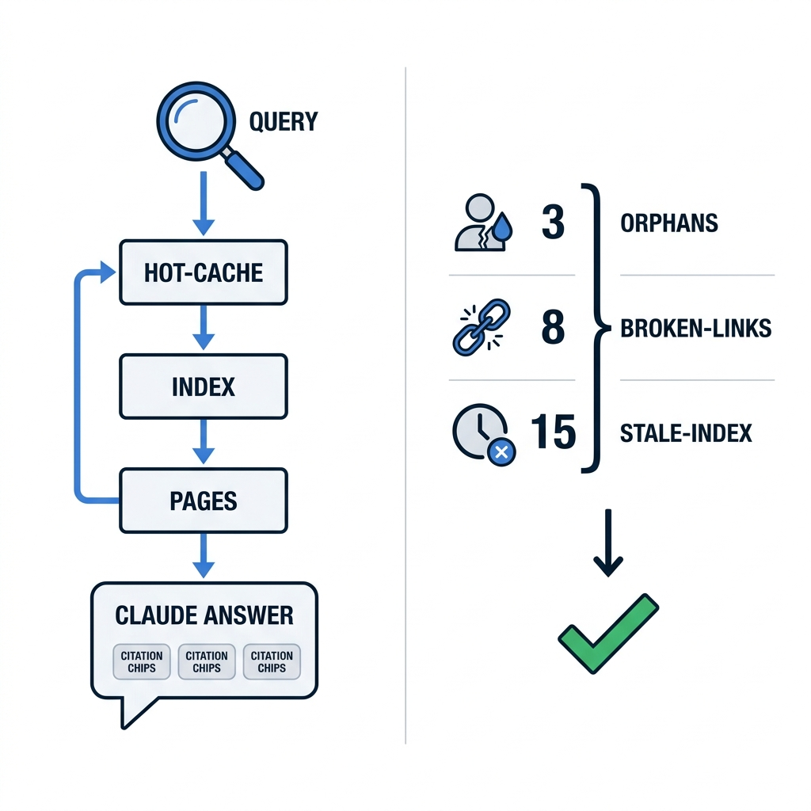
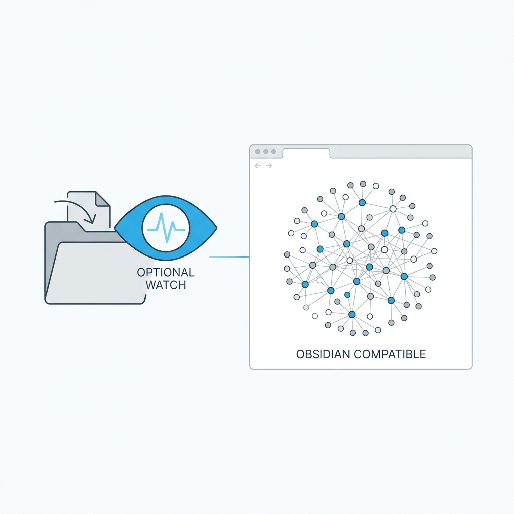
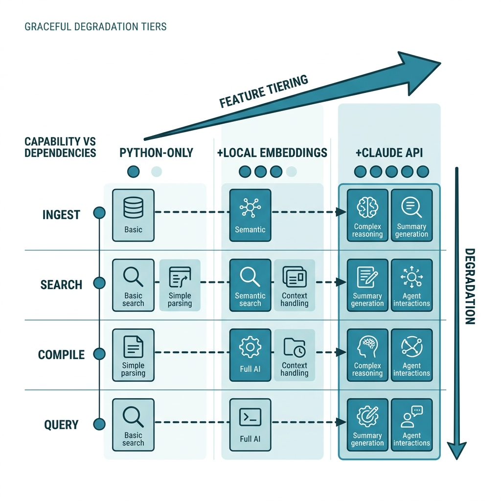

Drop any document, image, or artifact into one folder; an LLM compiles it into a persistent, self-linking Markdown knowledge graph you own — searchable, Obsidian-compatible, and harness-aware.
Status markers:
[] idle ·
[wip] in progress ·
[x] done ·
[f] failed
Mythic Proportion is a standalone local app (project folder mythic-proportion/) that gives the FABLE-HARNESS ecosystem — and its operator — a compounding "second brain." It implements Andrej Karpathy's LLM-Wiki pattern (published April 2026): instead of stateless RAG that re-discovers everything from raw chunks on every query, an LLM incrementally compiles and maintains a persistent wiki of Markdown pages that accumulates knowledge and cross-references over time. Knowledge compounds.
The headline feature is a drop folder: put a PDF, a screenshot, a DOCX, a code artifact, or a harness run's output into vault/drop/, and the system parses it, moves the immutable original into vault/raw/, and asks Claude to compile it into 8–15 interlinked wiki pages (source summaries, entity pages, concept pages) woven into one growing knowledge graph via [[wikilinks]]. The graph is the wikilinks — human-readable, portable, and openable in Obsidian with zero lock-in. A SQLite sidecar (sqlite-vec + FTS5) provides fast hybrid (BM25 + vector) retrieval on top.
Design ethos: ease of use and simplicity at the surface (five commands: init / ingest / query / lint / watch) with comprehensive, robust internals (typed pipeline, content-hash dedup, conflict resolution, incremental indexing, advisory file locking, graceful zero-API degradation).

Knowledge produced by and around the harness is scattered and stateless. Run artifacts land in .fable/, decisions in memory/, specs in specs/, plus the operator's own PDFs, screenshots, and notes live elsewhere entirely. Three concrete pains:

A three-layer LLM-Wiki, wrapped in a friendly five-verb CLI and an optional watcher:
raw/ (immutable inputs). Anything dropped is parsed with Docling (IBM, MIT — PDF/Office/image OCR + vision) with a MarkItDown fast-path for simple Office/HTML, then the original is preserved untouched in raw/, keyed by content hash (dedup).wiki/ (LLM-compiled pages). Claude compiles each source into interlinked Markdown: sources/, entities/, concepts/, sessions/. It reuses existing pages (dedup), adds [[wikilinks]], and records contradictions. The wikilink network is the knowledge graph.schema.md (page-type contract), an append-only index.md catalogue, and a ~500-word hot.md recent-context cache — plus a .index/ SQLite sidecar (sqlite-vec cosine + FTS5 BM25) for 3-tier hybrid retrieval.Everything is local and Obsidian-compatible. The LLM does the bookkeeping (linking, summarising, dedup, conflict resolution); the human does curation and judgement. With no API key, ingest still parses + files sources and the index still serves BM25 — the wiki-compile step degrades gracefully to a stub page rather than failing.

AGENTS.md / CONSTITUTION.md — the harness contract; the app is a self-contained subproject that honours N8 (no MCP; the app may call the Claude API itself, but the harness's operation never depends on it)..claude/skills/lib/plan-images.ps1 — used to extract/apply this plan's figure images (manual, local, N8-safe)..fable/, memory/, specs/ — example first-class ingest sources (the app is harness-aware: it can ingest the harness's own artifacts).mythic-proportion/pyproject.toml — package + deps (docling, markitdown, anthropic, sqlite-vec, watchdog, typer/click, pydantic).mythic-proportion/src/mythic_proportion/config.py — Pydantic settings (vault path, model, embeddings backend, egress toggle).mythic-proportion/src/mythic_proportion/vault/ — vault layout, init, page models, wikilink parse/write, advisory locking.mythic-proportion/src/mythic_proportion/ingest/ — Docling + MarkItDown adapters, type router, dedup, drop→raw mover.mythic-proportion/src/mythic_proportion/compile/ — Claude compile step (prompt, page synthesis, dedup/conflict, index/hot maintenance).mythic-proportion/src/mythic_proportion/index/ — SQLite schema, FTS5 + sqlite-vec, embeddings, hybrid retrieval.mythic-proportion/src/mythic_proportion/watch/ — watchdog watcher wrapping the triggered core (debounce + lock).mythic-proportion/src/mythic_proportion/cli/ — mythic init/ingest/query/lint/watch.mythic-proportion/tests/ — pytest suite (fixtures, fakes for Docling/Claude, golden vault).mythic-proportion/docs/ — README, architecture, usage, Obsidian setup.mythic-proportion/specs/mythic-proportion.html — this plan (lives inside the project folder per the request that everything sit under mythic-proportion/).Built exclusively with FABLE-HARNESS primitives — the typed engineer producer agent writes code, verified by verifier; no Hydra, no pair-programmer, no Fable-5 in the build (Fable-5 authored this plan only, per N2).
[x]Stand up an installable Python package, the config model, the vault layout, and the CLI skeleton so every later phase has a home. mythic init creates an Obsidian-compatible vault (drop/ raw/ wiki/{sources,entities,concepts,sessions}/ .index/ .vault-meta/) plus schema.md, index.md, hot.md, and a minimal .obsidian/.
[] pyproject.toml (PEP 621, src-layout, console-script mythic), pinned deps + extras ([ingest], [embeddings], [watch]) so the base install is light.[] config.py — Pydantic settings from env/.mythic.toml: vault path, Claude model (claude-sonnet-5 default), embeddings backend, allow_egress flag.[] vault/layout.py + vault/init.py — create/validate the vault tree; write schema.md (page-type contract), empty index.md/hot.md, Obsidian config.[] cli/ — Typer app exposing init/ingest/query/lint/watch as stubs that dispatch into modules.[] README.md quickstart + .gitignore (vault data, .index/, secrets).[] pip install -e ".[dev]" succeeds; mythic --help lists all five commands.[] mythic init ./tmpvault produces the full tree; re-running is idempotent (no clobber).[] pytest tests/test_vault_init.py asserts the tree, schema.md sections, and Obsidian compatibility.If a check cannot be made to pass after reasonable effort, mark the phase [f] and record why in Notes rather than looping forever.

[x]Turn anything in drop/ into a normalized, parsed, deduped IngestedSource and preserve the immutable original in raw/. This is the always-on, no-API-required foundation.
[] ingest/router.py — classify by extension/MIME into document (PDF/DOCX/PPTX/XLSX/HTML/MD/TXT), image (PNG/JPG/WEBP/TIFF), artifact (code/JSON/YAML/logs).[] ingest/docling_adapter.py — Docling → unified Markdown + structure (tables, OCR, image captions); lazy import so base install stays light.[] ingest/markitdown_adapter.py — fast deterministic path for simple Office/HTML/CSV (no ML).[] ingest/dedup.py — SHA-256 content hash; skip/relink already-ingested sources; record provenance.[] ingest/pipeline.py — orchestrate: read drop → parse → hash → write parsed Markdown to a staging area → move original to raw/<hash>.<ext> → emit IngestedSource.[] Unit tests with a fake Docling backend cover each router branch (doc/image/artifact) and a corrupt-file path.[] Dedup test: dropping the same file twice yields one raw/ entry and a logged skip.[] Integration: a fixture PDF + PNG + JSON in drop/ all land in raw/ with parsed Markdown; drop/ is emptied.If a check cannot be made to pass after reasonable effort, mark the phase [f] and record why in Notes.

[x]The heart of the LLM-Wiki pattern. Given a parsed source plus the current index.md/schema.md, Claude compiles 8–15 interlinked Markdown pages, reusing existing pages, weaving [[wikilinks]], and recording contradictions — then updates index.md and refreshes hot.md.
[] compile/prompt.py — schema-grounded system prompt: page-type rules, wikilink conventions, dedup-against-index instruction, conflict-record format. (Sonnet-tier prompting: separate "extract everything" from "filter/rank" per model-routing quirks.)[] compile/client.py — Anthropic Messages API wrapper: retries, token budgeting, structured tool-output for the page set; allow_egress-gated.[] compile/writer.py — write pages with frontmatter (type, source hash, created/updated, tags) + advisory per-file lock (60s stale reap); never overwrite a human-edited page without a merge note.[] compile/graph.py — resolve/normalize wikilinks, create stub pages for dangling links, update backlinks in index.md.[] compile/degrade.py — no-API fallback: emit a single well-formed source-summary stub page so ingest never hard-fails.[] Golden test with a fake Claude client returning a canned page set → asserts files written, wikilinks resolved, index/hot updated.[] Dedup/conflict test: re-compiling an overlapping source links to the existing entity page and appends a contradiction note rather than duplicating.[] Degradation test: with egress disabled, ingest still produces a valid stub page and exits 0.[] Lint (from Phase 5) reports zero broken links on the golden vault.If a check cannot be made to pass after reasonable effort, mark the phase [f] and record why in Notes.

[x]A zero-server SQLite sidecar under .index/ giving fast retrieval: FTS5 for BM25 sparse search (always available, no API) and sqlite-vec for cosine vector search, with a local embeddings backend. Incremental — only changed pages re-index.
[] index/schema.sql — pages, FTS5 virtual table, vec_pages (sqlite-vec), meta (content hashes for incremental sync).[] index/embeddings.py — pluggable backend: local (fastembed/sentence-transformers) default, optional Claude/remote; L2-normalized vectors.[] index/store.py — upsert/delete by page hash; reindex walks wiki/ and syncs only diffs.[] index/retrieve.py — 3-tier hybrid: BM25 candidates → vector cosine rerank → optional cross-page expansion via wikilinks; graceful BM25-only when embeddings absent.[] sqlite-vec loads on the target platform; a smoke test inserts + queries vectors.[] Incremental test: editing one page re-indexes exactly one row (hash-diff), not the whole vault.[] Retrieval test: a known query returns the expected top page under both hybrid and BM25-only modes.If a check cannot be made to pass after reasonable effort, mark the phase [f] and record why in Notes.

[x]The two operator-facing read paths. query answers a question by walking hot-cache → index → specific pages and asking Claude to synthesize a cited answer. lint is the health check: orphans, broken wikilinks, stale index rows, and coverage gaps.
[] cli query — retrieve (Phase 4) → assemble context (hot.md + top pages) → Claude answer with [[page]] citations; --no-llm prints ranked pages only (works offline).[] vault/lint.py — detect orphan pages (no in/out links), broken/dangling wikilinks, index staleness, and thin/empty pages; emit a structured report + exit code.[] --fix for lint — auto-create dangling stubs, prune dead index rows, refresh hot.md.[] Query test (fake Claude): correct pages retrieved and cited for a known question; --no-llm path returns ranked pages offline.[] Lint test: a vault seeded with one orphan + one broken link is detected; --fix resolves both and re-lint is clean.If a check cannot be made to pass after reasonable effort, mark the phase [f] and record why in Notes.

[x]Wrap the triggered ingest core in an optional real-time watcher, finish Obsidian compatibility, and complete tests + docs. The watcher is a thin layer over the same core (your "both" choice) — no separate code path to drift.
[] watch/watcher.py — watchdog observer on drop/, debounce (settle window), advisory-lock reuse, calls the exact Phase-2/3 pipeline; mythic watch foreground command with clean shutdown.[] Obsidian: graph-view colour groups by page type, _templates/ frontmatter, sensible .obsidian/app.json; verify the vault opens cleanly.[] Harness-aware ingest recipe: doc + make ingest-harness to pull specs/, memory/, recent .fable/ artifacts into the vault.[] Docs: docs/architecture.md, docs/usage.md, docs/obsidian.md; top-level README with the 60-second quickstart.[] CI-style make check: ruff + mypy + pytest with coverage on the pipeline.[] Watcher test: dropping a file while watch runs triggers exactly one ingest (debounced, no double-fire).[] End-to-end: init → (drop 3 mixed files) → ingest → query → lint on a fresh vault, all green.[] Obsidian smoke: vault opens; graph view renders type-coloured nodes; no config errors.If a check cannot be made to pass after reasonable effort, mark the phase [f] and record why in Notes.

[x] cd mythic-proportion && ruff check . && mypy src — lint + type-check clean (ruff: all passed; mypy: 34 files, no issues).[x] pytest -q --cov=mythic_proportion — full suite green (102 passed; ~88% coverage).[x] Cold-start E2E on a scratch vault: mythic init → drop 3 mixed sources → mythic ingest → mythic query "…" → mythic lint all succeed.[x] No-API degradation pass: E2E ran with no API key and no heavy deps — ingest+index+BM25 query all succeed via stub pages.[x] Independent verifier agent re-derived every claim from disk (not self-report) — verdict: pass.Same loop discipline as per-phase checks: nothing is done until every command here passes.
[] opensqlite-vec wheel loads against the bundled Python SQLite on Windows — Why it matters: if the extension won't load, the index degrades to FTS5-only (still functional) or falls back to a pure-Python cosine over stored vectors. — Resolved: [] open[] openANTHROPIC_API_KEY is available in the environment for the compile/query steps — Why it matters: without it the app still runs (degraded stubs + BM25) but the flagship "LLM-compiled graph" needs it; the plan must never hard-require it. — Resolved: [] open — confirm your key/model preference before Phase 3.mythic-proportion/specs/ (inside the project) rather than the harness-root specs/ is correct, given "everything under mythic-proportion/". — Resolved: [x] confirmed (per the request).Why LLM-Wiki over classic GraphRAG/LightRAG. GraphRAG builds community summaries at high token cost (~610k tokens where LightRAG uses <100); LightRAG is a leaner entity/relation index. But both are retrieval indices. Karpathy's LLM-Wiki instead produces durable human-readable pages that compound — the graph is the wikilinks, not a proprietary index — which is exactly the "own your knowledge, simple yet robust" brief. We still borrow LightRAG's spirit (entity/relation pages) and layer a hybrid index for speed.
Why files-first + SQLite, not a graph DB. Kùzu — the leading embedded graph DB — was archived after Apple's Oct-2025 acquisition; betting the store on it is a dead-end. Markdown+wikilinks is future-proof, diff-able, Obsidian-native, and user-owned; SQLite (+ actively-maintained sqlite-vec + built-in FTS5) covers fast hybrid retrieval without a server. This is the durability-over-cleverness call.
Build governance. Implementation uses only FABLE-HARNESS primitives — the typed engineer agent writes code against this plan (which serves as the spec), verifier independently confirms each phase from disk, Reflexion ×1 then escalate on failures (N3), typed producers only (N7). No Hydra, no pair-programmer, no other installed squad. Fable-5 authored this plan only (N2) and is not used in the build.
Graceful degradation is a first-class requirement, not a nicety. Every LLM/embedding/parse dependency has a documented fallback so the app is useful with just Python + files (parse + file + BM25), better with local embeddings (hybrid search), and best with an API key (compiled graph + synthesized answers).

Append-only post-execution change history (newest at the bottom). Never rewrite history — only add.
All 6 phases built with FABLE-HARNESS engineer agents only (no Hydra, no pair-programmer; Fable-5 authored this plan only, per N2). Final state: 102 tests pass, ruff + mypy clean (34 source files), cold-start end-to-end verified on a fresh vault, and an independent verifier agent re-derived every claim from disk (verdict: pass).
Two defects were found during the global-validation gate and fixed (this is why the gate exists):
.md/.txt hard-failed with an IngestDependencyError because the document parser unconditionally required Docling. Fixed with a text-fast-path (read_text_document) so plain-text documents ingest with zero optional deps, honouring the first-class "works with just Python + files" requirement. Binary formats (PDF/DOCX/images) still legitimately require the [ingest] extra.[]. Root cause (sharper than first hypothesised): Rich markup was swallowing [[lowercase-title]] as an unclosed style tag. Fixed by escaping/disabling markup on dynamic output and adding a derive_title fallback chain (frontmatter title -> first H1 -> humanised filename).Preserved invariants across both fixes (N9): classify() return values unchanged; default_parser_registry() public shape unchanged; the five-verb CLI surface (init/ingest/query/lint/watch) and page-frontmatter contract unchanged. Changed behaviours: plain-text document dispatch now uses a zero-dep reader; CLI dynamic output is markup-safe. Images pipeline unchanged: 10 figure slots remain "image pending" (prompt sheet at specs/mythic-proportion.image-prompts.md) — no images were claimed as rendered.
Two further changes landed after the initial verified build, both implemented by FABLE-HARNESS engineer agents against this plan, 138 pytest passing:
mythic serve). A FastAPI + vanilla-JS SPA (src/mythic_proportion/web/, optional [web] extra) at http://127.0.0.1:8765/ by default, across six tabs (Wiki / Search / Ask / Graph / Ingest / Lint), backed by the exact same building blocks (ingest_drop, compile_source, hybrid_search, answer_query, lint_vault/lint_fix) the CLI already uses, so the web UI can never drift from CLI behaviour.src/mythic_proportion/llm/authhub.py), authenticated via AUTHHUB_API_KEY and routed to a DeepSeek model (MYTHIC_LLM_MODEL=deepseek-chat by default) through POST {base_url}/api/v1/ai/chat/completions, with structured output obtained via prompted strict-JSON (that endpoint has no tools/response_format). Anthropic/Claude remains a selectable alternate provider via MYTHIC_LLM_PROVIDER=anthropic + ANTHROPIC_API_KEY.compile and query's answer synthesis now REQUIRE a working, configured LLM provider; the earlier stub-page compile fallback and --no-llm ranked-pages-digest fallback are gone, replaced by actionable CompileError/AnswerError exceptions naming exactly what's missing. Rationale: silent degradation looked like success and could hide a missing/rotated credential indefinitely, and a stub page or ranked-pages list isn't a degraded version of an LLM-Wiki's core value proposition — it's a different, much weaker product. BM25/hybrid retrieval and the dangling-wikilink graph stubs in lint were never part of this and remain LLM-independent.Preserved invariants (N9): the original five verbs (init/ingest/query/lint/watch) and their flags are unchanged in shape (only query --no-llm's behaviour changed, from degrading to erroring, as documented); Layer 1 (parse+file+dedup) and BM25 search remain LLM-independent; page-frontmatter contract, schema.md/index.md/hot.md conventions, and the wikilink-network-is-the-graph design are unchanged; fastapi/uvicorn/httpx are all lazy-imported so the rest of the package stays importable without the new optional extras. Changed behaviours: a sixth verb (serve) was added; the default LLM provider and its HTTP contract changed from direct Anthropic to AuthHub-fronted DeepSeek; compile/query now hard-require a working LLM instead of degrading.